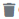

Template
Le Template du PSMF est un squelette de document. Il est unique et comporte des sections, des sous-section et des annexes et des variables natives.
Toutes mises à jour impactant ce Template se répercutent de facto sur l’ensemble de tous les PSMF. Le Template du PSMF est défini comme suit :
- Une liste de variables,
- Une liste de sections,
- Un pied de page – Obligatoire,
- Un entête – Obligatoire.
1. Liste des sections et sous-sections du Template
1Le template peut être visualisé ensemble au format PDF. Cliquez sur le bouton en haut à droit de la page.- = Le template au format pdf
2vous pouvez voir l'aide utilisateur et consulter l'historique des modifications du template. = l'historique des modifications du template
= l'historique des modifications du template = l'aide utilisateur
= l'aide utilisateur
3Vous pouvez ajouter, modifier, visualiser, désactiver/activer, supprimer une section, une sous-section ou une annexe.- = ajouter une section, une sous-section ou une annexe.
 = visualiser une section, une sous-section ou une annexe.
= visualiser une section, une sous-section ou une annexe. = modifier une section, une sous-section ou une annexe.
= modifier une section, une sous-section ou une annexe. = désactiver/activer une section, une sous-section ou une annexe au format pdf.
= désactiver/activer une section, une sous-section ou une annexe au format pdf.-  = supprimer une section, une sous-section ou une annexe au format pdf.
- = cette sous-section ou cette annexe saut de page
 ajouter une section, une sous-section ou une annexe.
ajouter une section, une sous-section ou une annexe.
Le template peut être visualisé ensemble au format PDF, pour déboguer l'erreur de PDF, ajoutez ?debug=1 à la fin de l'url.
https://xxxx/fr/admin/template/show/pdf?debug=1
2. Ajouter une section, une sous-section ou une annexe
La structure d’une section ou une sous section est définie par :
- Un titre – Obligatoire,
- Une position – Obligatoire,
- Un contenu – Facultatif,
- Une liste de sous sections – Facultatif.
1Le parent d'une section, d'une sous-section ou d'une annexe. si vous choisissez "Gloable", ce sera au premier niveau. il peut avoir jusque'à 3 niveaux.2La position d'une section, d'une sous-section ou d'une annexe dans son niveau.3Désactiver/activer une section, une sous-section ou une annexe.4Cochez s'il s'agit d'une annexe.5Cochez s'il autorise sous le niveau.6Cochez s'il autorise un saut de page, cette option est pour une sous-section ou une sous-annexe7Des variables systèmes8Des variables globales
3. Modifier une section, une sous-section ou une annexe
10Des variables locales, si la classe des variables locales est lièe à cette section, cette sous-section ou cette annexe. Plus